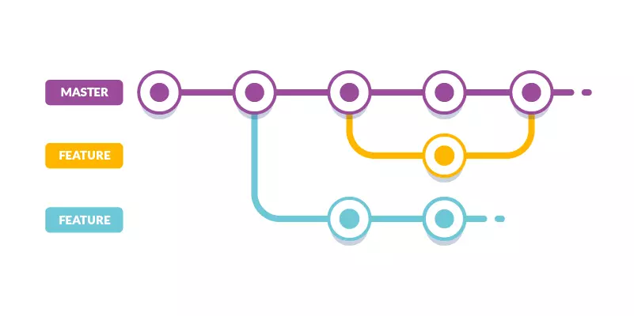

GIT
The First Skill For Programmers !

What Is Git ?
Git is a version control system that tracks changes to files over time. It's a powerful tool that allows developers to collaborate effectively, manage different versions of their projects, and revert to previous states if necessary.
READ MORE

Why developers need Git:
Git allows multiple developers to work on the same project simultaneously. making it easy to revert to previous versions if needed.
READ MORE

What is a branch in Git?
A branch in Git is like a parallel version of a repository. It allows you to
work on different features or bug fixes independently.
READ MORE